Core Components
This page covers the primary architectural components that implement the agent execution model, session management, and service infrastructure in the agent-swarm-kit system. For information about the public API functions like addAgent, session, and complete, see Core API Functions. For details about the dependency injection container and service layering, see Service Architecture.
Agent Execution Engine
The agent execution engine consists of two primary components: ClientAgent for message processing and AI completion, and ClientHistory for conversation management.
ClientAgent
ClientAgent is the core execution engine that processes incoming messages, executes tool calls, and generates AI completions. It implements the IAgent interface and serves as the primary orchestrator for agent behavior.
Key responsibilities:
- Message Execution: Processes user and tool messages through
execute()method - Stateless Completion: Provides quick completions via
run()method without history updates - Tool Orchestration: Validates, executes, and manages tool calls with abort signal support
- AI Integration: Coordinates with completion services for model responses
- Event Emission: Broadcasts execution events through the bus system
The ClientAgent uses a queued execution model to prevent overlapping operations and maintains internal subjects for managing tool execution flow, agent changes, and output cancellation.
ClientHistory
ClientHistory manages conversation history for agents, providing filtered message arrays optimized for AI completion contexts and maintaining message persistence.

Key features:
- Message Filtering: Applies agent-specific filters to scope relevant messages
- Tool Call Consistency: Links tool outputs to their corresponding tool calls
- History Limits: Enforces message count limits via
keepMessagesparameter - Persistence Integration: Handles message storage and retrieval through history adapters
- Event Broadcasting: Emits history events for system monitoring
The history system supports both raw message access and agent-optimized arrays that include system prompts and maintain tool call relationships for proper AI completion context.
Session Management
ClientSession
ClientSession orchestrates communication between clients, agents, and swarms while enforcing policies and managing message flows. It implements the ISession interface and serves as the primary coordination layer.
Core capabilities:
- Message Execution: Coordinates agent execution with policy validation
- Policy Enforcement: Validates input/output messages against configured policies
- Communication Hub: Manages message emission to swarms and notification channels
- Agent Coordination: Interfaces with swarm components to access and control agents
- Event Integration: Broadcasts session events for monitoring and logging
The session maintains separation between stateful execution (with history updates) and stateless completion, while ensuring all communications pass through policy validation layers.
Service Infrastructure
The service infrastructure provides the foundation for component lifecycle management, dependency injection, and API exposure through a layered architecture.
Connection Services
Connection services manage the instantiation and lifecycle of core components using memoization for efficient reuse.

Service responsibilities:
- AgentConnectionService: Creates and manages
ClientAgentinstances with tool and completion dependencies - SessionConnectionService: Instantiates
ClientSessionwith swarm and policy configurations - HistoryConnectionService: Provides
ClientHistoryinstances with storage adapters - SwarmConnectionService: Manages
ClientSwarminstances for agent navigation and coordination
Each connection service uses memoize from functools-kit to cache instances by composite keys, ensuring efficient resource usage and consistent state management.
Public Services
Public services provide the external API layer with context management and method scoping around connection services.

Public service features:
- Context Scoping: Wraps all operations with
MethodContextService.runInContext()for proper context management - Method Delegation: Delegates core functionality to connection services while adding context and logging
- Performance Tracking: Integrates with
PerfServicefor execution monitoring - Validation Integration: Coordinates with validation services for operation safety
- Event Broadcasting: Ensures proper event emission through the bus system
The public services layer provides a clean separation between external API and internal component management while ensuring consistent context propagation throughout the system.
Component Integration
The core components work together through a well-defined integration pattern that ensures proper message flow, state management, and error handling.
Integration patterns:
- Layered Delegation: Public services delegate to connection services which manage component instances
- Context Propagation: Method context flows through all layers ensuring proper scoping
- Event Broadcasting: Components emit events at each layer for monitoring and coordination
- Resource Sharing: Memoization ensures efficient reuse of expensive component instances
- Error Propagation: Errors bubble up through layers with proper context preservation
This architecture provides clear separation of concerns while maintaining efficient resource usage and proper state management across the entire system.